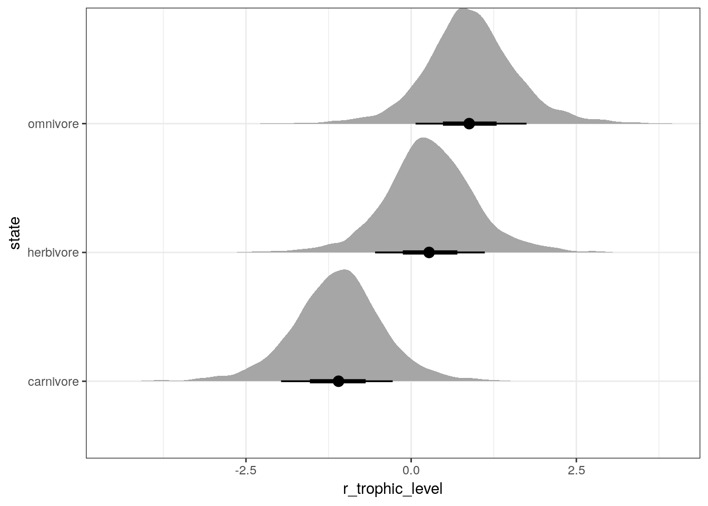
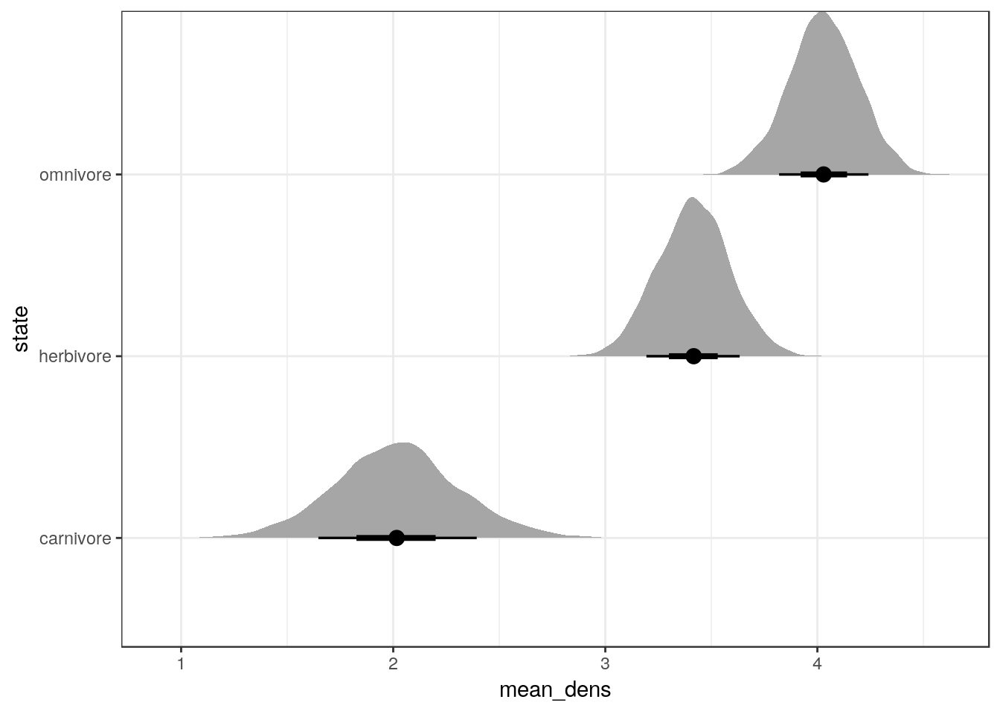
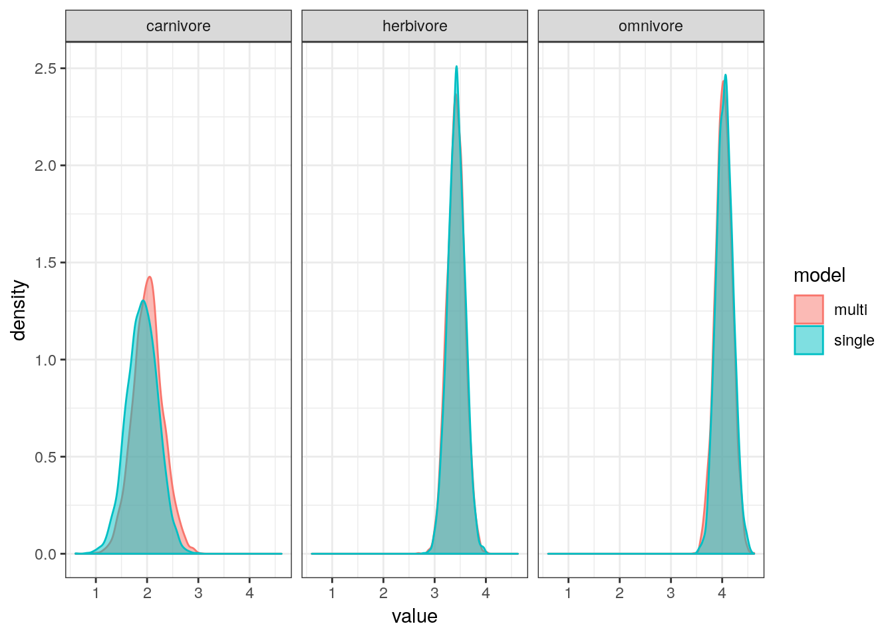
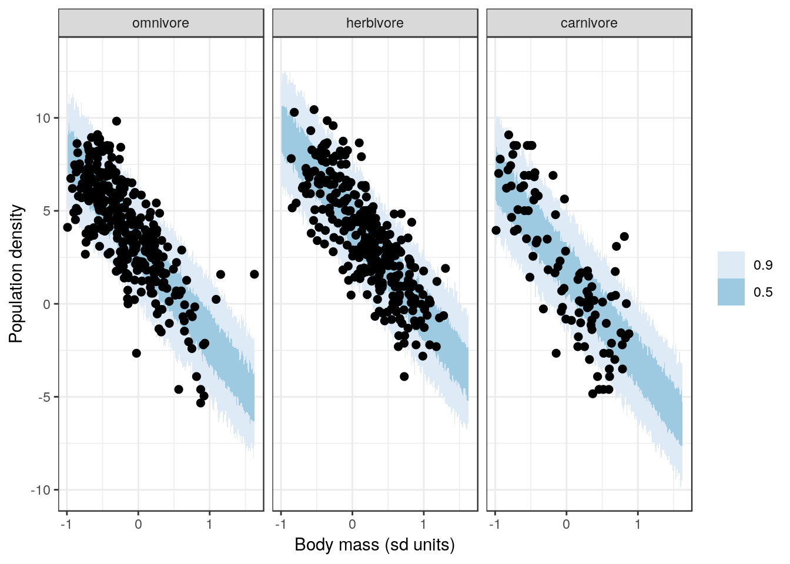
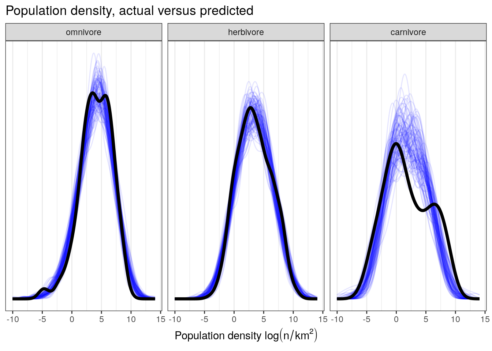

9 Varying-intercept models
9.1 Objectives
- Introduce multilevel structures
- Introduce varying intercept models
- Demonstrate how to fit a varying-intercept model.
library(pacman)
p_load(tidyverse, here, janitor, purrr, viridis, brms, tidybayes, bayesplot,
modelr, forcats)
theme_set(theme_bw())9.2 Reading
The following materials are recommended pre-readings before starting this tutorial.
- Chapter 12 “Multilevel Models” from Statistical Rethinking by Richard McElreath.
- Chapter 12 “Multilevel linear models: the basics” from Data Analysis Using Regression and Multilevel/Hierarchical Models by Gelman and Hill.
- OPTIONAL Chapter 11 “Multilevel structures” from Data Analysis Using Regression and Multilevel/Hierarchical Models by Gelman and Hill.
This lesson is a major conceptual leap forward in our studies. I highly recommend you check out this interactive visualization to get a handle on what we’re going to be covering in this lesson. Also, if you have not already read the lesson on multiple predictors or the lesson on interactions, please do as there are strong conceptual similarities between those lessons and multilevel models.
9.3 Introduction
When collecting or analyzing data, it is not uncommon to identify groupings or nested structures underpinning our data. For example, we might have multiple measurements from the same individual or species, species co-occurrences across multiple temporal windows or localities, species from different ecological guilds, etc. Structured data is very common but the knowledge of how to model it properly is rare.
In our previous lessons we’ve covered how to include categorical predictors in our regression models as a way to encode some of this known structure in our data. By relying on dummy variables, however, we are forcing our model to consider the different states independently because their parameters are statistically independent even though we know of the logical relationship between them. The reality of this is that we are ignoring information that could be relevant to our understanding. But we want models that use all of this information, like that omnivory and herbivory are types of trophic levels and not completely independent.
We want inferences about one state to possibly inform inferences about another. Importantly, this does not mean treating all states as identical. Instead, we want to understand the distribution of states within a group as well as the individual states themselves. For example, this would mean the estimating the average and spread among the trophic levels as well as the individual values for each trophic level. Simultaneously inference means we can transfer information between states and improve our inferences.
Multilevel models are models that remember features of each (identified) group in the data as they learn about all the states. The amount of variation among the clusters determines how much the model pools information across clusters and improving our overall estimates.
Pragmatic benefits of multilevel modeling:
- Improved estimates for repeat sampling. When more than one observation arises from the same individual, location, or time, then traditional single-level models either maximally underfit or overfit the data. By identifying and modeling that repeated sampling, we can improve our estimates of the variable being measured and propagate our uncertainty about that parameter.
- Improved estimates for imbalance in sampling. When some individuals, locations, or times are sampled more than others, multilevel models automatically cope with differing uncertainty across these clusters. This prevents over-sampled clusters from unfairly dominating inference.
- Estimates of variation. If our research questions include variation among individuals or other groups within the data, then multilevel models are a big help because they model variation explicitly. Dummy coding does not include the variation between the states, which is potentially very useful information.
- Avoid averaging, retaining variation. Too often people summarize repeated sampling by pre-averaging some data to construct their variables. This can be dangerous because averaging removes variation. Also, there are lots of ways to average data. Averaging manufactures false confidence and introduces an arbitrary data transform. Multilevel models allow us to preserve our uncertainty and avoid unnecessary and unprincipled data transforms.
Each of the states is considered a realization from the same population. The probability distribution for the population acts as the prior for each of the states. Except this prior isn’t exactly the same as we’re used to. Instead, this prior is actually learned from the data.
Multilevel regression should be the default approach to regression. In the vast majority of cases, multilevel models are superior single-level models. Once you grasp the basics of the multilevel modeling strategy it becomes much easier to incorporate related tricks such as allowing for measurement error in the data and even modeling missing data! Defining, implementing, and understanding a multilevel model is in general more complicated than a single-level model. We have to define the distribution of our states – something that sounds a lot harder than it is. Also, multilevel models are a lot harder to fit than most single-level models. This means more time tuning our MCMC algorithm, something we’ve so far been able to avoid. Finally, because multilevel models by their nature make statements at different “levels” of the data, they can be difficult for people to understanding. People rarely think about a population and the individual values within that population simultaneously.
Also, to make sure we’re all on the same page because the literature is full of alternative and conflicting language: multilevel = hierarchical = mixed effects. Depending on the authors background or the structure of the data, there is a change they’ll favor different language. Multilevel is probably the most generic term, and labeling your model as varying-intercepts and/or varying-slopes is certainly clearer than mixed effects model. Check out Gelman and Hill Chapter 11 for a longer discussion of the complications surrounding mixed effects model as a term.
9.4 A basic model with categorical predictor
The basic form of a multilevel model is termed a “varying-intercept” model. This type of model is conceptually very similar to a model with a multistate categorical predictor, but instead of including \(k - 1\) binary predictors in our model, we are defining a model where each state has its own intercept, and those intercepts share a common prior distribution.
For this example we’re going to explore how mammal species population density varies as a function of species trophic level. All this data is from the PanTHERIA dataset database, a large collection of trait data for extant mammals. If you need a refresher on the definitions of the variables within this dataset, you can review the data dictionary.
As per usual, let’s import the PanTHERIA dataset, clean it up a bit, and prepare it for further exploration and analysis. Importantly, I’m recoding trophic_level so that “omnivore” is the default state.
pantheria <- read_tsv(here('data', 'PanTHERIA_1-0_WR05_Aug2008.txt'),
na = '-999.00') %>%
clean_names() %>%
mutate(mass_log = log(x5_1_adult_body_mass_g),
range_group_log = log(x22_1_home_range_km2),
range_indiv_log = log(x22_2_home_range_indiv_km2),
density_log = log(x21_1_population_density_n_km2),
activity_cycle = case_when(x1_1_activity_cycle == 1 ~ 'nocturnal',
x1_1_activity_cycle == 2 ~ 'mixed',
x1_1_activity_cycle == 3 ~ 'diurnal'),
trophic_level = case_when(x6_2_trophic_level == 1 ~ 'herbivore',
x6_2_trophic_level == 2 ~ 'omnivore',
x6_2_trophic_level == 3 ~ 'carnivore')) %>%
drop_na(mass_log, density_log, trophic_level) %>%
mutate(mass_stan = arm::rescale(mass_log), # center and scale
trophic_level = fct_infreq(trophic_level)) # reorder by frequency## Parsed with column specification:
## cols(
## .default = col_double(),
## MSW05_Order = col_character(),
## MSW05_Family = col_character(),
## MSW05_Genus = col_character(),
## MSW05_Species = col_character(),
## MSW05_Binomial = col_character(),
## References = col_character()
## )## See spec(...) for full column specifications.To start, let’s write out a linear regression model where population density \(y\) is predicted by trophic level dummy coded to two binary predictors: herbivory \(h\) and carnivory \(c\).
\[ \begin{align} y_{i} &= \text{Normal}(\alpha + \beta_{h} h_{i} + \beta_{c} c_{i}, \sigma) \\ \alpha &\sim \text{Normal}(0, 10) \\ \beta_{h} &\sim \text{Normal}(0, 5) \\ \beta_{c} &\sim \text{Normal}(0, 5) \\ \sigma &\sim \text{Cauchy}^{+}(5) \\ \end{align} \]
My guess is that this should look familiar. This is the way we’ve been writing out regression models with a multistate categorical predictor so far.
\(\beta_{h}\) and \(\beta_{c}\) are modeled independently, which means that any information we learn about one will have no effect on our learning for the other. We know that the different trophic levels are part of the same category and are certainly not logically independent. Additionally, because of dummy coding, \(\beta_{h}\) and \(\beta_{c}\) are defined by their difference from \(\alpha\) (the population density of omnivores).
9.5 Notation for multilevel models
To allow information about one trophic level to be shared with the other trophic levels, let’s reframe this model into a varying-intercept. Because this is our first time writing out a multilevel model, let’s first define some terms and notation. The style of notation presented here is based on Gelman and Hill and BDA3, which is used widely and is used in the brms documentation.
Here’s a summary the notation we’ve been using so far for our regression models.
- Observations \(i = 1, \ldots, n\) where an observation is the smallest unit of measurement (e.g. species in the PanTHERIA dataset).
- Outcome measurement \(y = (y_{1}, \ldots, y_{n})\). These are the values being modeled (e.g. species population density).
- Regression predictors are either vectors \(x\) or \(n \times k\) matrix \(X\). Unless the intercept is written out explicitly, the first column of \(X\) is all 1-s.
- For each observation \(i\), its row-vector of predictors is \(X_{i}\).
- For each predictor \(k\), the \((k + 1)^{st}\) column of \(X\) as \(X_{(k)}\) (assuming that the first column of \(X\) is a column of 1-s).
- Coefficients are sometimes written as a vector \(\beta\) and sometimes individually as \(\alpha\) and one or more \(\beta\)-s.
- Any information about the unit labels \(i\) should be coded in the regression inputs. For example, if \(i = 1, \ldots, n\) are in temporal order, we should create a time variable \(t_{i}\) and possibly include it in \(X\).
As we introduce multilevel models, we also need to introduce some new notational conventions.
- Observations belong to a group \(j = 1, \ldots, J\). This is for single level groupings (e.g. specimens of a species).
- For a second grouping you can use \(g = 1, \ldots, G\) to indicate those memberships. You can substitute other letters if you prefer, but be careful to not overload you letters (e.g. if \(k\) is the number of predictors, don’t use \(k\) as a grouping).
- Indices \(j[i]\) represent group membership (“\(i\) belongs to group \(j\)”).
- Group-level predictors are represented by \(u\) if there is only one and by a matrix \(U\) with \(J\) rows if there are multiple.
- Group-level regression coefficients are typically labeled \(\gamma\).
- \(\sigma_{y}\) is the data-level standard deviation and \(\sigma_{\alpha}\), \(\sigma_{\beta}\), and so on, are for group-level standard deviations.
These conventions will get us through this lesson. As more complicated situations arise, we’ll introduce additional notational conventions.
9.6 From categorical predictors to varying-intercept
Now that we’ve established some ground rules, we can update our previous model with a multistate categorical predictor dummy coded to a varying-intercept model with that categorical predictor as the grouping factor.
\[ \begin{align} y_{i} &= \text{Normal}(\alpha_{j[i]}, \sigma) \\ \alpha_{j} &\sim \text{Normal}(\mu_{\alpha}, \sigma_{\alpha}) \\ \mu_{\alpha} &\sim \text{Normal}(0, 10) \\ \sigma &\sim \text{Cauchy}^{+}(5) \\ \sigma_{\alpha} &\sim \text{Normal}^{+}(1) \\ \end{align} \]
Let’s parse out this model.
\(\alpha_{j[i]}\) is the intercept the trophic level \(j\) that species \(i\) belongs to. The prior for \(\alpha_{j}\) is a function of two parameters, \(\mu_{\alpha}\) and \(\sigma_{\alpha}\).
Instead of a single prior distribution for each \(j\) of \(\alpha_{j}\), we’re using a distribution of distributions as a prior for all values of \(j\). The parameters of the prior then have their own priors, defined as usual.
This is the “multi” part of multilevel modeling – we’ve defined two levels of parameters, each of which is a simple model. We have the observation level (species), where species population densities are modeled as functions of their trophic levels. We also have a group level (trophic level) model, which describes the average population densities of the different trophic as a function of a mean of population density and its spread between the trophic levels.
When we fit this model to our data, we will simultaneously estimate both levels – this means that we will learn about the individual trophic levels while we also learn about the population of trophic levels.
Multilevel models breakdown the traditional differences between likelihood and prior. In this varying-intercepts model, can you isolate the likelihood? The prior? This flexibility and mutability in meaning and utility can be intimidating, especially if you’re coming from a fairly traditional background where parts of your model live in distinct boxes.
Oh, and so you know, the parameters of the prior can be referred to as hyperparameters, so their priors can also be referred to as hyperpriors.
9.7 Fitting a multilevel model
So let’s fit two models – the model with trophic level dummy coded, and the model with trophic level as a varying-intercept. We can then compare posterior parameter estimates to see if anything has changed.
dummy_fit <-
pantheria %>%
brm(data = .,
family = gaussian(),
formula = bf(density_log ~ 1 + trophic_level),
prior = c(prior(normal(0, 10), class = Intercept),
prior(normal(0, 5), class = b),
prior(cauchy(0, 5), class = sigma)),
iter = 2000,
warmup = 1000,
chains = 4,
cores = 4,
refresh = 0)print(dummy_fit)## Family: gaussian
## Links: mu = identity; sigma = identity
## Formula: density_log ~ 1 + trophic_level
## Data: . (Number of observations: 746)
## Samples: 4 chains, each with iter = 2000; warmup = 1000; thin = 1;
## total post-warmup samples = 4000
##
## Population-Level Effects:
## Estimate Est.Error l-95% CI u-95% CI Eff.Sample
## Intercept 4.05 0.16 3.74 4.37 3185
## trophic_levelherbivore -0.63 0.23 -1.08 -0.19 3998
## trophic_levelcarnivore -2.14 0.34 -2.82 -1.48 3279
## Rhat
## Intercept 1.00
## trophic_levelherbivore 1.00
## trophic_levelcarnivore 1.00
##
## Family Specific Parameters:
## Estimate Est.Error l-95% CI u-95% CI Eff.Sample Rhat
## sigma 2.95 0.08 2.80 3.11 3615 1.00
##
## Samples were drawn using sampling(NUTS). For each parameter, Eff.Sample
## is a crude measure of effective sample size, and Rhat is the potential
## scale reduction factor on split chains (at convergence, Rhat = 1).multilevel_fit <-
pantheria %>%
brm(data = .,
family = gaussian(),
formula = bf(density_log ~ 1 + (1 | trophic_level)),
prior = c(prior(normal(0, 10), class = Intercept),
prior(cauchy(0, 5), class = sigma),
prior(normal(0, 1), class = sd, group = trophic_level)),
iter = 2000,
warmup = 1000,
chains = 4,
cores = 4,
refresh = 0,
control = list(adapt_delta = 0.9))print(multilevel_fit)## Family: gaussian
## Links: mu = identity; sigma = identity
## Formula: density_log ~ 1 + (1 | trophic_level)
## Data: . (Number of observations: 746)
## Samples: 4 chains, each with iter = 2000; warmup = 1000; thin = 1;
## total post-warmup samples = 4000
##
## Group-Level Effects:
## ~trophic_level (Number of levels: 3)
## Estimate Est.Error l-95% CI u-95% CI Eff.Sample Rhat
## sd(Intercept) 1.13 0.44 0.52 2.18 1557 1.00
##
## Population-Level Effects:
## Estimate Est.Error l-95% CI u-95% CI Eff.Sample Rhat
## Intercept 3.13 0.69 1.69 4.57 1259 1.00
##
## Family Specific Parameters:
## Estimate Est.Error l-95% CI u-95% CI Eff.Sample Rhat
## sigma 2.95 0.08 2.81 3.10 2836 1.00
##
## Samples were drawn using sampling(NUTS). For each parameter, Eff.Sample
## is a crude measure of effective sample size, and Rhat is the potential
## scale reduction factor on split chains (at convergence, Rhat = 1).With so few trophic levels, we have to use a more informative prior than previously.
A lot of ink has been spilled about how many categories are necessary for multilevel modeling to be effective, and a lot of people caution against using groupings with few categories. For example, our trophic level variable only has 3 groupings and it is totally overkill to use a multilevel model instead of dummy coding the variable. With only 3 categories, it is extremely hard to get a high precision estimate of the variance between the groups, so why even estimate it?
When you have very few categories in your grouping factor, your results will be very sensitive to your choice of prior. Again, if you have 3 data points, it is going to be very hard to get precise estimates – you’re mostly going to get a result very similar to your prior. We can see this in one of our first examples of Bayesian updating – as more data is added, our estimates become more precise.
9.8 Understanding our multilevel model
In our dummy model our intercept term is the average population density of omnivorous mammals, while the herbivore and carnivore terms describe the difference between the omnivore mean and the herbivore (or carnivore) mean. This parameteriation also does not explicitly define the difference between herbivore and carnivore average population density – that has to be calculated by hand. Make sure you can identify how all the parameters in this summary map back to our written model.
In contrast, for our multilevel model we have a single intercept term under “population-level effects” – this is \(\mu_{\alpha}\). There is also a new subsection titled “group-level effects” which has a single parameter sd(Intercept). This standard deviation parameter is \(\sigma_{alpha}\) from our model definition. What’s missing from this summary are the estimates for the different trophic levels. In our model definition these are the individual values of \(\alpha_{j}\), which describe that trophic level’s difference from the grand mean \(\mu_{\alpha}\).
Let’s get the posterior distributions for those differences and then calculate the estimated average population density for each trophic level.
multilevel_fit %>%
get_variables()## [1] "b_Intercept"
## [2] "sd_trophic_level__Intercept"
## [3] "sigma"
## [4] "r_trophic_level[omnivore,Intercept]"
## [5] "r_trophic_level[herbivore,Intercept]"
## [6] "r_trophic_level[carnivore,Intercept]"
## [7] "lp__"
## [8] "accept_stat__"
## [9] "stepsize__"
## [10] "treedepth__"
## [11] "n_leapfrog__"
## [12] "divergent__"
## [13] "energy__"Here b_Intercept is the global meanwhile r_trophic_level[] variables are the offsets from that mean for each of the trophic level states.
tidybayes has convenience features to simultaneously extract all the different forms r_trophic_level[] appears as. Instead of writing out r_trophic_level[herbivore,Intercept] for each of the specific columns, we can more succinctly write out r_trophic_level[state,term].
This syntax will return our posterior draws with state and term as columns of the relevant information (trophic level and Intercept, respectively).
multilevel_fit %>%
spread_draws(r_trophic_level[state, term])## # A tibble: 12,000 x 6
## # Groups: state, term [3]
## .chain .iteration .draw state term r_trophic_level
## <int> <int> <int> <chr> <chr> <dbl>
## 1 1 1 1 carnivore Intercept -1.10
## 2 1 1 1 herbivore Intercept -0.133
## 3 1 1 1 omnivore Intercept 0.744
## 4 1 2 2 carnivore Intercept -1.14
## 5 1 2 2 herbivore Intercept -0.0382
## 6 1 2 2 omnivore Intercept 0.921
## 7 1 3 3 carnivore Intercept -1.04
## 8 1 3 3 herbivore Intercept 0.646
## 9 1 3 3 omnivore Intercept 0.987
## 10 1 4 4 carnivore Intercept -1.15
## # … with 11,990 more rowsYou can even omit the second term.
multilevel_fit %>%
spread_draws(r_trophic_level[state,])## # A tibble: 12,000 x 5
## # Groups: state [3]
## .chain .iteration .draw state r_trophic_level
## <int> <int> <int> <chr> <dbl>
## 1 1 1 1 carnivore -1.10
## 2 1 1 1 herbivore -0.133
## 3 1 1 1 omnivore 0.744
## 4 1 2 2 carnivore -1.14
## 5 1 2 2 herbivore -0.0382
## 6 1 2 2 omnivore 0.921
## 7 1 3 3 carnivore -1.04
## 8 1 3 3 herbivore 0.646
## 9 1 3 3 omnivore 0.987
## 10 1 4 4 carnivore -1.15
## # … with 11,990 more rowsWe can plot the distribution of posterior estimates for each trophic level’s difference from the grand mean. Remember, the estimated average population density for each trophic level are these values plus the estimates for the intercept term.
multilevel_fit %>%
spread_draws(r_trophic_level[state, ]) %>%
ggplot(aes(x = r_trophic_level,
y = state)) +
geom_halfeyeh(.width = c(0.5, 0.8))
We can also make a similar plot, but this time compare the posterior estimates of average population density by trophic group. This will be essentially the previous plot but with the intercept added to the trophic level differences.
multilevel_fit %>%
spread_draws(b_Intercept, r_trophic_level[state, ]) %>%
mutate(mean_dens = b_Intercept + r_trophic_level) %>%
ggplot(aes(x = mean_dens,
y = state)) +
geom_halfeyeh(.width = c(0.5, 0.8))
You’ll notice the last two plots are almost identical except the first was centered about 0 and the second is (approximately) centered around 3.15.
But how different are our estimates for mean population density by trophic level when estimated using a single-level regression versus a multilevel regression?
single_level <-
dummy_fit %>%
spread_draws(b_Intercept,
b_trophic_levelherbivore,
b_trophic_levelcarnivore) %>%
transmute(omnivore = b_Intercept,
herbivore = b_Intercept + b_trophic_levelherbivore,
carnivore = b_Intercept + b_trophic_levelcarnivore) %>%
gather(key = key, value = value)
multi_level <-
multilevel_fit %>%
spread_draws(b_Intercept, r_trophic_level[state, ]) %>%
ungroup() %>%
mutate(key = state,
value = b_Intercept + r_trophic_level) %>%
dplyr::select(key, value)
bind_rows(single_level, multi_level, .id = 'model') %>%
mutate(model = case_when(model == 1 ~ 'single',
model == 2 ~ 'multi')) %>%
ggplot(aes(x = value, colour = model, fill = model)) +
geom_density(alpha = 0.5) +
facet_wrap(~ key)
The estimates from both models are almost identical. The only visible difference is that the estimates for mean omnivore population density, which has shrunk slightly towards mean. Interestingly, that estimate is our least precise one (highest variance).
What we have gained by using a multilevel model is a direct estimate of the variance between trophic levels, \(\sigma_{\alpha}\).
The distribution \(\text{Normal}(\mu_{\alpha}, \sigma_{\alpha})\) defines the distribution of average population density for all trophic levels – including those which aren’t measured. Assuming that other trophic levels behave like the three we’ve observed, we can generate an average population density for that theoretical trophic level.
Now, this concept is probably nonsense when discussing trophic levels, but makes perfect sense in many other contexts. For example, if we were looking at population density at different sites we might want to estimate the population density at some unobserved site.
9.9 A more complex varying-intercept model
We can improve on this simple varying-intercept model by including other predictors of species population density. In this example, we will include species average body size as a predictor. This exercise is a reimplementation of a previous model of ours but using the varying-intercepts we’ve just introduced.
First, let’s define this model, building on our earlier model of population density with just a varying intercept. We have to define two terms. Let’s have \(x_{i}\) signify the average body mass of species \(i\), which has been log transformed and rescaled. The parameter \(\beta\) is the regression coefficient for this predictor.
Everything else is as before.
\[ \begin{align} y_{i} &= \text{Normal}(\alpha_{j[i]} + \beta x_{i}, \sigma) \\ \beta &= \text{Normal}(0, 5) \\ \alpha_{j} &\sim \text{Normal}(\mu_{\alpha}, \sigma_{\alpha}) \\ \mu_{\alpha} &\sim \text{Normal}(0, 10) \\ \sigma &\sim \text{Cauchy}^{+}(5) \\ \sigma_{\alpha} &\sim \text{Normal}^{+}(1) \\ \end{align} \]
As we’ve always done, we’ve added this predictor to the linear model describing the mean of \(y_{i}\). The regression coefficient has the same interpretation as usual: it describes the expected change in mean \(y\) for unit change in \(x\).
Now that we’ve written out the model, we can fit it using brm().
bigger_fit <-
pantheria %>%
brm(data = .,
family = gaussian(),
formula = bf(density_log ~ 1 + mass_stan + (1 | trophic_level)),
prior = c(prior(normal(0, 10), class = Intercept),
prior(normal(0, 5), class = b),
prior(cauchy(0, 5), class = sigma),
prior(normal(0, 1), class = sd, group = trophic_level)),
iter = 2000,
warmup = 1000,
chains = 4,
cores = 4,
refresh = 0,
control = list(adapt_delta = 0.9))print(bigger_fit)## Family: gaussian
## Links: mu = identity; sigma = identity
## Formula: density_log ~ 1 + mass_stan + (1 | trophic_level)
## Data: . (Number of observations: 746)
## Samples: 4 chains, each with iter = 2000; warmup = 1000; thin = 1;
## total post-warmup samples = 4000
##
## Group-Level Effects:
## ~trophic_level (Number of levels: 3)
## Estimate Est.Error l-95% CI u-95% CI Eff.Sample Rhat
## sd(Intercept) 1.26 0.44 0.62 2.29 1964 1.00
##
## Population-Level Effects:
## Estimate Est.Error l-95% CI u-95% CI Eff.Sample Rhat
## Intercept 3.16 0.76 1.58 4.72 1218 1.00
## mass_stan -4.99 0.14 -5.26 -4.71 3250 1.00
##
## Family Specific Parameters:
## Estimate Est.Error l-95% CI u-95% CI Eff.Sample Rhat
## sigma 1.80 0.05 1.71 1.89 3251 1.00
##
## Samples were drawn using sampling(NUTS). For each parameter, Eff.Sample
## is a crude measure of effective sample size, and Rhat is the potential
## scale reduction factor on split chains (at convergence, Rhat = 1).There are a few things we can do with this fitted model: explore our parameter estimates, and check model adequacy. Because we skipped checking model adequacy with our just varying intercept model, let’s start with that.
The most basic check is plotting out data and comparing with the posterior predictions from our model.
pantheria %>%
data_grid(mass_stan = seq_range(mass_stan, n = 1000),
trophic_level) %>%
add_predicted_draws(model = bigger_fit,
n = 100) %>%
ungroup() %>%
ggplot(aes(x = mass_stan, y = .prediction)) +
stat_lineribbon(aes(group = trophic_level), .width = c(0.5, 0.9), size = 0) +
geom_point(data = pantheria,
mapping = aes(y = density_log), size = 2) +
labs(x = 'Body mass (sd units)', y = 'Population density') +
scale_fill_brewer() +
facet_wrap(~ trophic_level) +
NULL
The above graph should look familiar – it is almost identical to one of our previous model checks for our model with dummy coded trophic_level. This similarity makes sense because our model here is just a translation of that model into varying intercept form. Deja vu is going to be a recurring theme for the next few graphs.
Similarly, we can also look at how well our model reproduces the distribution of population density by trophic level.
pantheria %>%
add_predicted_draws(model = bigger_fit,
n = 100) %>%
ungroup() %>%
ggplot(aes(x = .prediction, group = .draw)) +
geom_line(stat = 'density',
alpha = 0.1,
colour = 'blue') +
geom_line(stat = 'density',
data = pantheria,
mapping = aes(x = density_log,
group = NULL),
colour = 'black',
size = 1.5) +
scale_y_continuous(NULL, breaks = NULL) +
labs(x = expression(paste('Population density ', log(n / km^2))),
title = 'Population density, actual versus predicted') +
facet_wrap(~ trophic_level) +
NULL
This plot demonstrates our model’s difficulty in fully reproducing the distribution of population densities of carnivores. This misfit suggests that carnivores have a slightly different pattern of population densities than the other two trophic levels – something we’ve noticed since our first multipredictor model.
We were able to improve upon this specific modeling failure in our tutorial on interactions by including an interaction term between trophic level and body size in our linear predictor. But how can we do that with a varying intercept term? There isn’t a covariate to define an interaction with, so what can we do? This issue is the motivation behind our next lesson on varying-slope and combined varying-intercept, varying-slope models.
9.10 Summary
This lesson was a brief introduction to multilevel models and a fast “how-to” on varying-intercept models. We covered the meaning of multilevel model and various data configurations where multilievel modeling might be appropriate. Varying-intercept models were introduced as an alternative to dummy coding of multistate categorical predictors. We covered a lot additional of notation for writing out multilevel models. After introducing all of this material, we covered fitting and extracting model estimates from our multilevel model fit using brms.
Multilevel modeling is overkill for the example from this lesson. Because of this, this section has mostly been a “how-to” because being comfortable with this type of model is important for understanding more complex models we will delve deeper into multilevel models and different types of structured data.